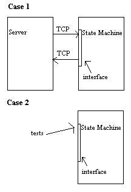

Building a Test SuiteWhyI'd like to share my first experience with formal software testing. After reading the chapter on testing in dive into python, I was fascinated. But at the same time, it left me with that 'Oh that example is trivial. That'll never work in a real world app.' feeling. So when I started this endeavor, I had some reservations. It wasn't going to be easy and there are many tests that are just too difficult to perform. (However, any tests are better than none at all.) And even a less than comprehensive set of tests would surely take a long time to write. Well, I've now written functional and (some) unit tests for a fairly complicated real world application. And it was well worth the time spent. I actually did find bugs while writing the unit tests - some of them surprised me. (I'm not used to finding bugs in code that has been working for some time.) But even more importantly, I have additional confidence that the code works and that it can now be modified (by me or someone else) without too much fear of breaking something. And believe me, testing and re-testing the same features over and over every time I make a minor modification is not fun. The aforementioned benefits are the typical ones cited by the advocates. But there are a few others that became apparent after I started. To start with, it forces you to be at least a little systematic with your tests. Until that point, my tests were essentially random and done differently every time. I always had that horrible feeling I wasn't testing a lot my code. Once you start actually writing tests, you'll think of lots more as you work your way through the initial tests. That brings me to the next point. The tests are written down. This accomplishes two things. (1) The requirements can map directly into the functional tests. It then becomes very clear what the requirements are. And it's recorded in unambiguous language! (2) You'll notice as you write the tests that you are effectively documenting how the code works. I'm constantly forgetting how my own code works. Now I can just glance at the appropriate test case and it tells me exactly what's going on. Hopefully you're already convinced and ready to try it. But I want to say a few more things before I get to the example. Writing tests is tedious. I didn't start until long after the software was written (and already tested). It takes a long time, and there isn't a whole lot of motivation after you get over the initial thrill. I suggest applying a test first strategy (which I have not yet attempted) or at least write your each test after you complete a new feature. Otherwise you will leave yourself with a very large and boring task to do later. That isn't to mention that bugs are better caught earlier. Having said that, there is a 'fun' part. When you first see all your tests pass, it's a wonderful experience. It will make you feel warm and fuzzy inside. ExampleI want to talk about functional tests. The only example of a test suite I've ever seen was about as simple and straight forward as they come. My example is based off of true ugly code. The situation is this. I have a server talking over TCP to another server (really just a complicated state machine). I decided early on that I would only test the state machine and only in a single thread. This made the testing tractable, but unfortunately left much untested. Although there may have been ways to test the server, it would have proven very difficult (especially without better testing software or hardware). The situation is shown here. The first case is the original scenario. The bottom case represents how the test works. The little rectangle is the interface class through which the state machine speaks with the server. Instead of trying to completely emulate the server, the interface class is just replaced with a skeleton such that I can easily set the return messages. Of course, this means I had to set them all myself for every state. But it had the advantage of forcing me to think through all the test cases instead of the usual, sloppy, half-ass testing I probably would have done. In order to accomplish this I had to make a class that multiply inherited from both the test class and the threaded class that starts the state machine. Then I had to pass it my special skeleton interface. It was a bit tricky, but it was necessary to make sure both the tests ran correctly and that the threaded state machine ran without any extra emulation or intervention. The other thing to note is that I used the unittest.py module even thought these were meant to be functional tests. But it worked ok. Then it was just a matter of working my way through the states one at a time. In some instances I had long tests that were really short tests strung together to test transitioning through many states. Usually when I did this, it was because I couldn't think of a decent way to test a certain subset of states. Unfortunately these tests were somewhat randomly composed. But remember, not-so-great tests are always better than no tests at all. If you can't come up with a way to absolutely guarantee some code is working, put the best you've got in there. You'll at least have some of the simpler cases verified. Anyway, there are a few more things that help. Use fixtures to set up long tests. If you have a state that the code can't get to without going first through several other states, use a fixture. I usually did this in a separate class and then extended it. In some cases you'll need to clean up code as well. In unittest.py, this is the tearDown method. At one point, I thought I was done, but when I ran through all my tests, almost none passed. This was because one of my tests made some database changes and didn't cleanup afterwords. This broke the rest of my tests. I didn't realize the problem because I had been running one test at a time. I fixed it with tearDown. I suggest you write one test at a time, but check and make sure all the tests complete every so often. Also make sure your tests can actually fail. A few times I wrote tests that were not restrictive enough. I.e. they passed even when I emulated bad data. (Ideally you should probably have whole separate suites testing for positive and negative outcomes.) You really don't start thinking about these things until you've written a number of tests. So get out there, and start writing them. |